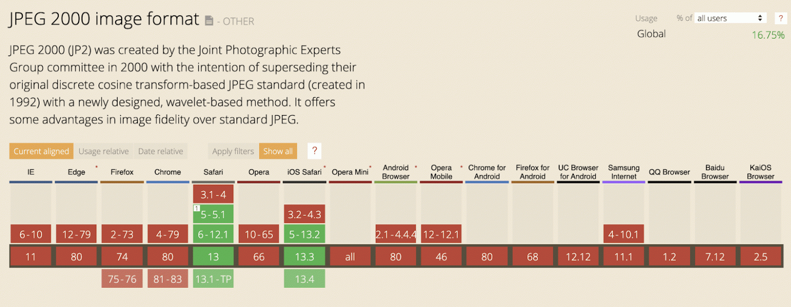
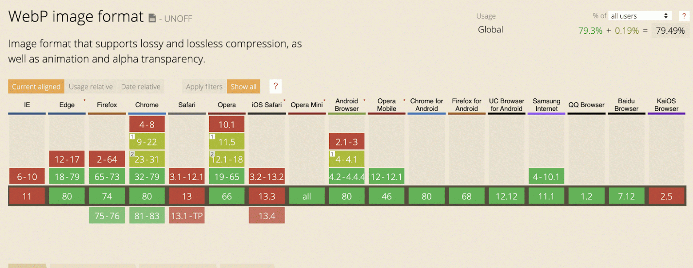

| JPEG | WebP |
|---|---|
|
|
При равном разрешении и увеличении качество картинок двух форматов является высоким, однако формат WebP выигрывает
за счет размере файла.
При увеличении картинок можно заметить что на некоторых объектах картинки в формате JPEG появляется зернение, на
картинке WebP
видны пиксели, однако изображение более гладкое.
JPEG |
|
|---|---|
WebP |
|
|  |
|  |